Antranig’s Engineering Portfolio
Welcome to my portfolio. Here you’ll find a selection of my work. Explore my projects to learn more about what I do.
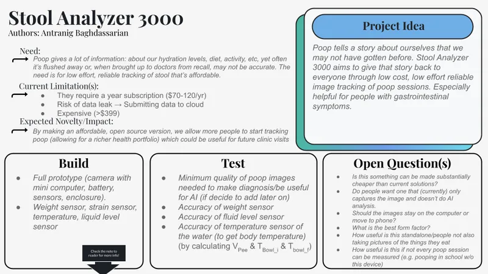
Stool Analyzer 3000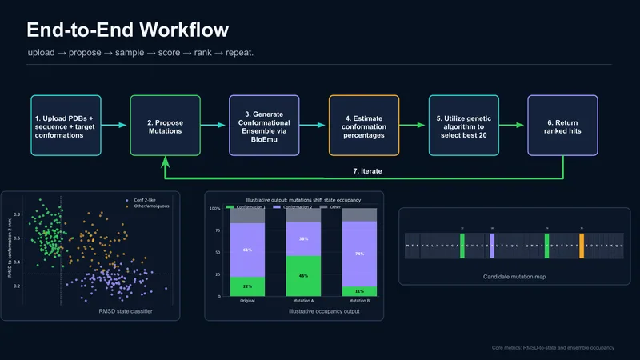
EvoEmu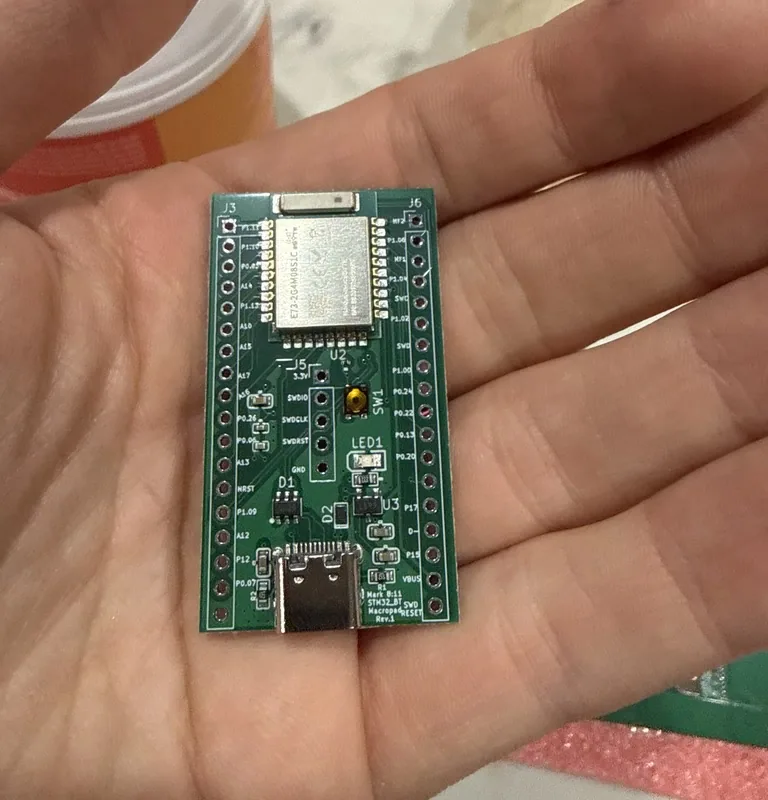
Bluetooth Macropad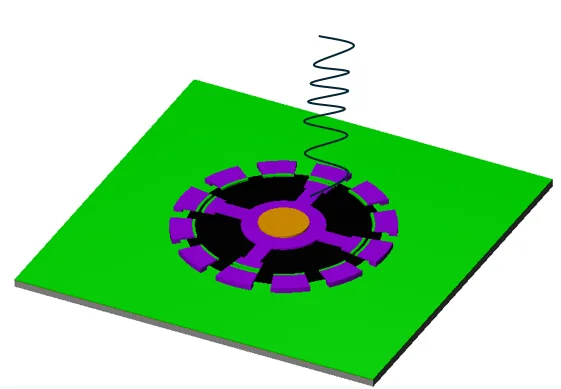
MEMS Nanobot Propulsion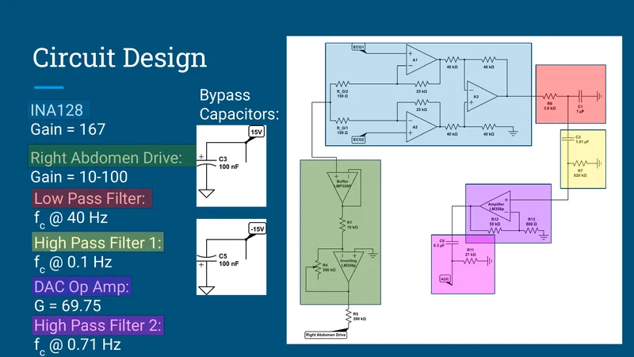
Heart Rate & Mental Exertion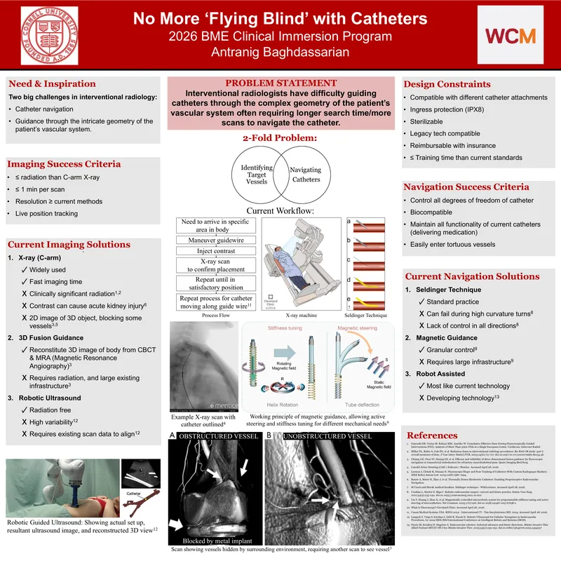
Clinical Immersion: Catheter Navigation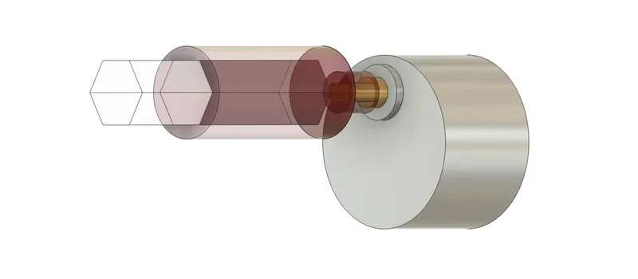
Autoblind Turner on Arduino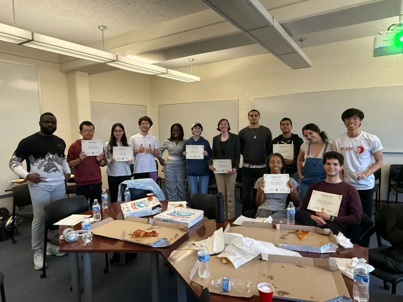
Mastermind Circles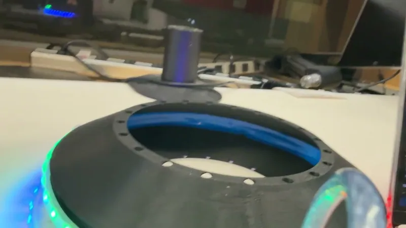
Tron Disc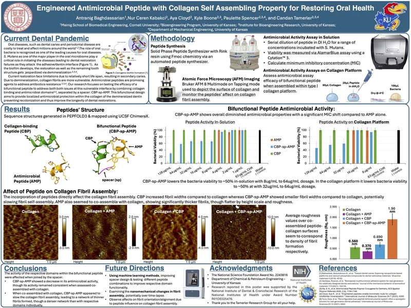
Engineered Antimicrobial Peptide with Collagen Self Assembling Property for Restoring Oral Health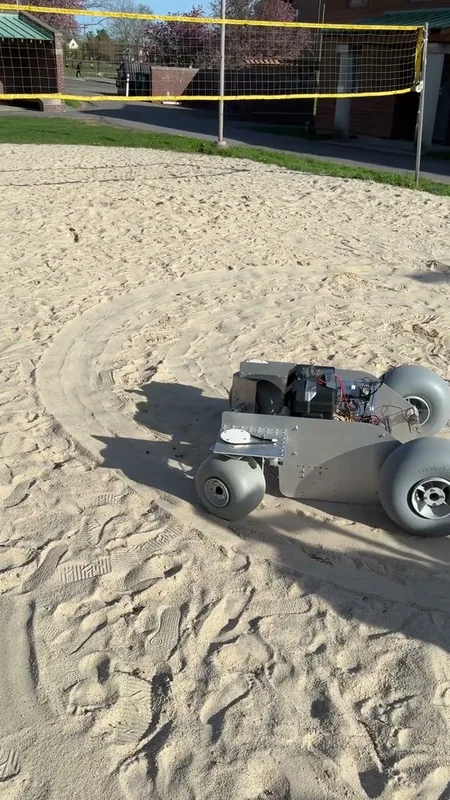
Nexus: Engineering Project Team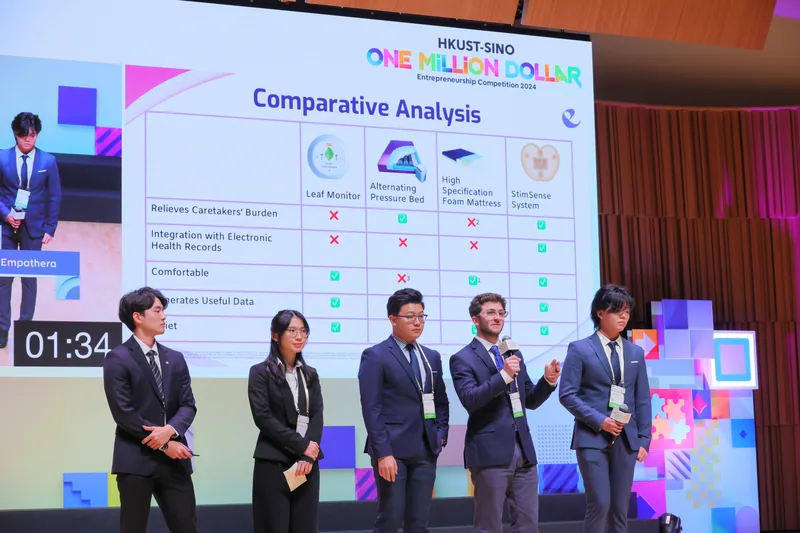
Empathera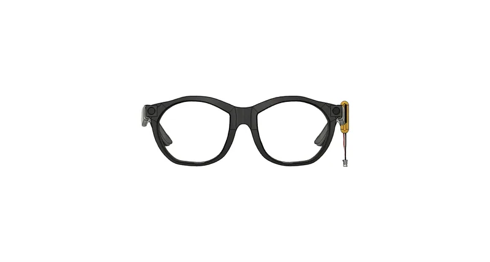
NaviSense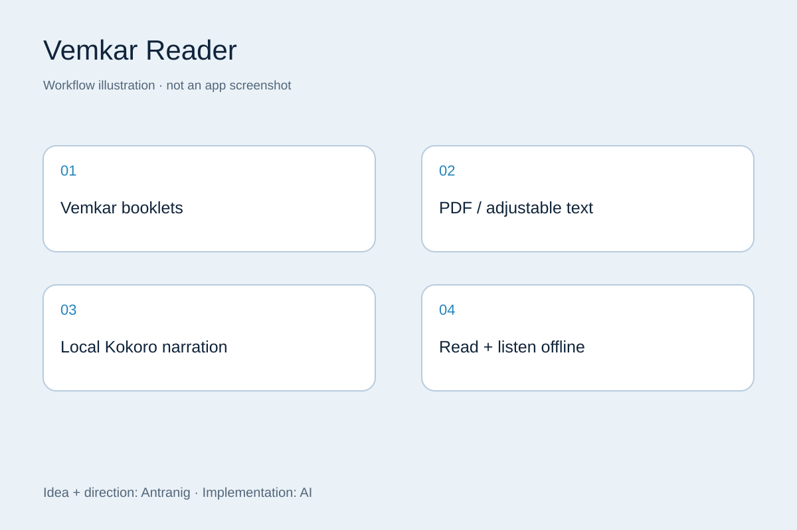
AI Shenanigans